【行者无疆·文韵皖南】个人实践感悟——仲禹潼

山风漫过马头墙
墨香缓缓漫出旧坊
我们步履不停
寻访非遗的故事
留存岁月里温热的匠心
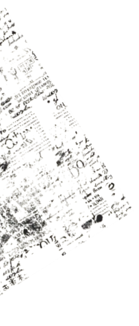
这个暑期，我跟随“行者无疆”实践团前往黄山，开展非遗文化社会实践活动。通过走访徽州文化博物馆、糕饼博物馆、石雕工坊、墨厂、宣纸园以及瞻淇鱼灯传承基地，我走出课本、走进乡土，近距离感受徽州非遗文化的独特魅力，对传统文化的传承与创新有了更深的感悟。
01
PART
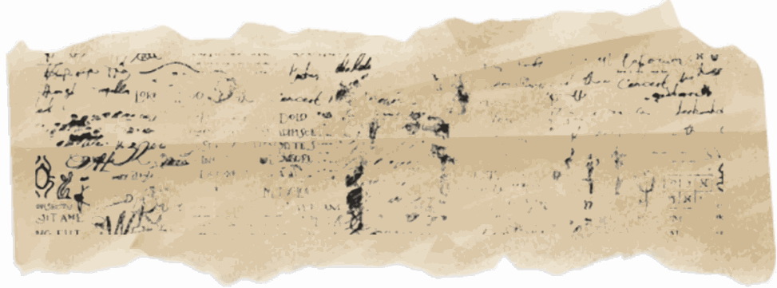
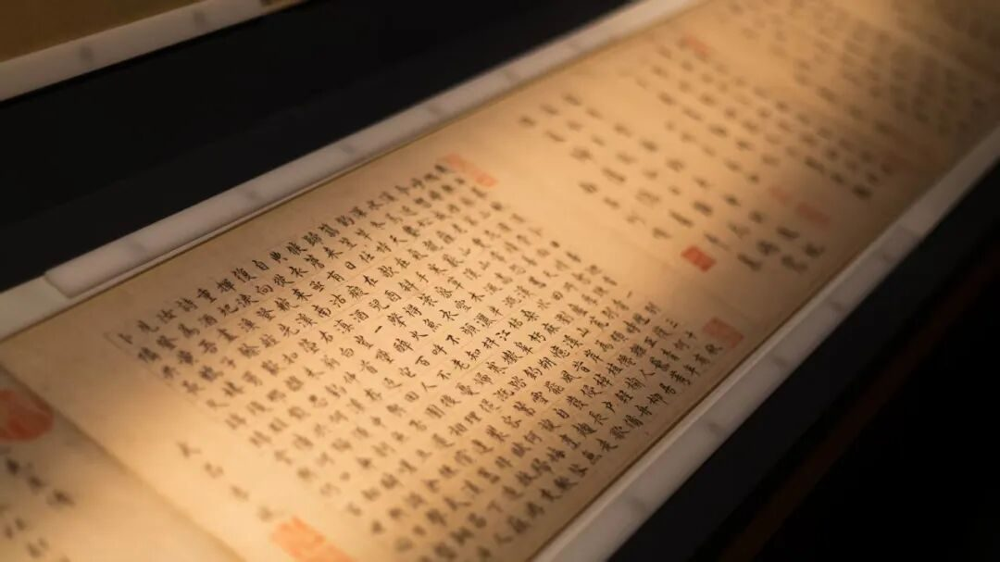
在徽州文化博物馆，丰富的文物与资料完整展现了徽州千年文脉，徽派建筑、徽州三雕、徽商文化与传统文房技艺交相辉映。现代化的展陈方式让传统文化焕发新生，也让我清晰认识到非遗发展的现实难题。传统技艺工序繁琐、学习周期长，在快节奏的现代社会，逐渐面临传承人断层、受众减少的困境。而在糕饼馆的亲手体验，也让我明白非遗并非遥远的古董，而是扎根生活、充满烟火气息的民俗文化。
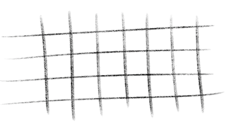
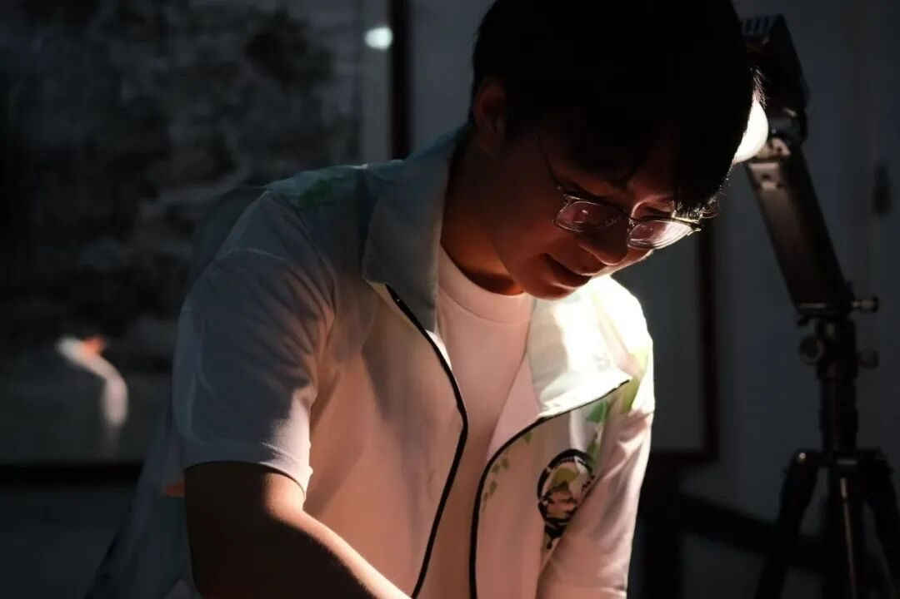
在石雕工坊，我目睹匠人一凿一磨精工细作，将民俗寓意与传统美学刻入石材，尽显徽派工艺的精巧匠心。传统手工雕琢保留了工艺温度，而现代化机械辅助加工提高了生产效率，新旧方式的结合，让我深刻思考传统技艺如何在时代发展中守住本心、与时俱进。
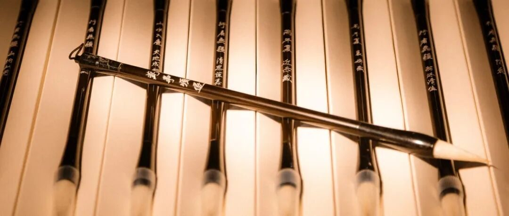
走进徽墨、宣纸、毛笔制作基地，我真切体会到文房非遗的来之不易。一方徽墨、一张宣纸、一支毛笔，都需要历经数十道工序、反复打磨而成，承载着徽州崇文重教的深厚底蕴。匠人日复一日的坚守，让古老技艺得以延续。
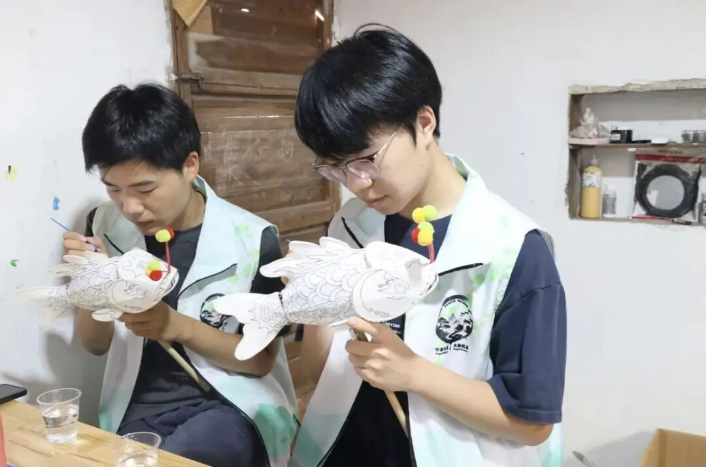
不同于文房工艺的雅致，瞻淇鱼灯承载着乡村民俗的温暖。以竹篾为骨架、彩纸为衣的鱼灯，寄托着年年有余的美好寓意，灯火巡游的民俗活动凝聚着乡情邻里。同时，新式文创鱼灯的出现，也让我看到传统民俗顺应时代、焕发新生的可能性。
02
PART
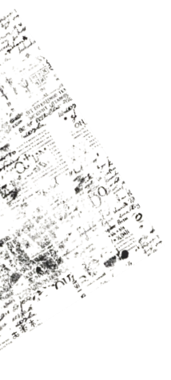
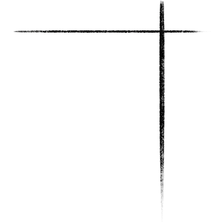
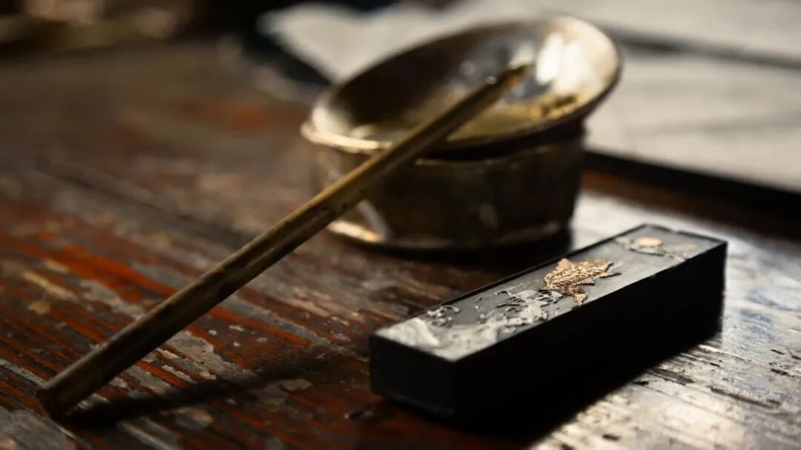
此次实践让我深刻认识到，非遗传承从来不是简单的守旧，而是在坚守文化内核的基础上不断创新。机械化可以提速，文创可以扩宽传播渠道，但手工的温度与文化底蕴无可替代。
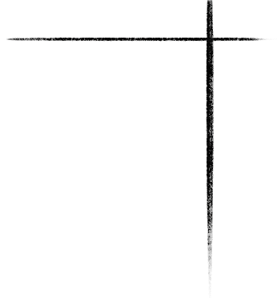
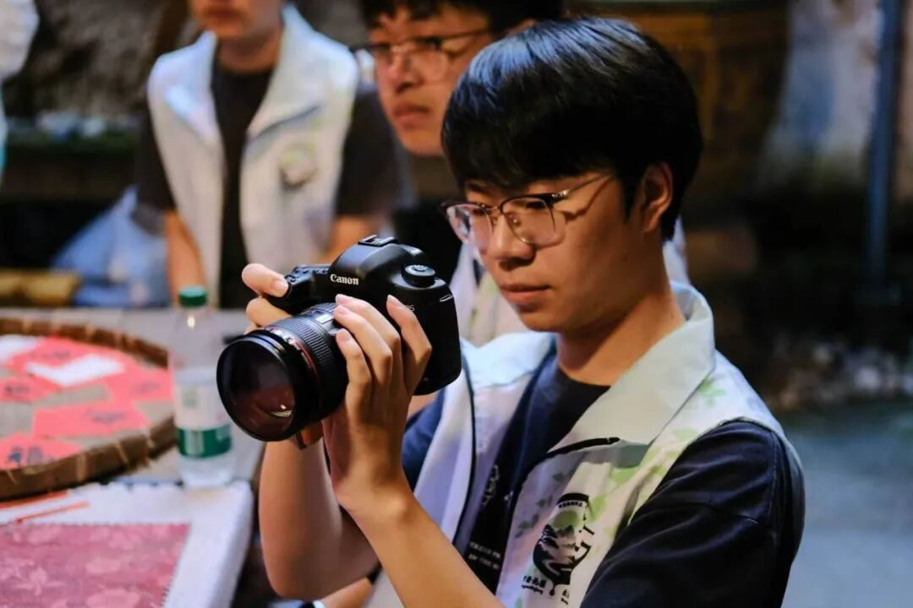
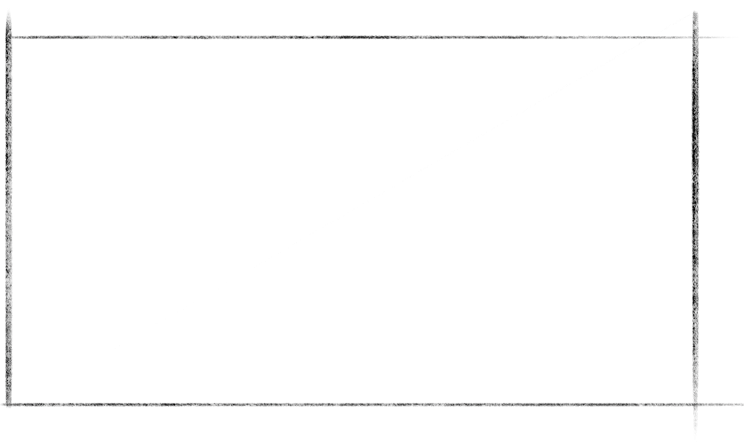
作为新时代青年，我们不再只是传统文化的旁观者。走出校园亲身调研后，我更加明白非遗保护与传承的意义。未来，我将主动了解传统、传播非遗文化，以青年之力守护千年文脉，让传统技艺在新时代生生不息、薪火相传。
03
PART
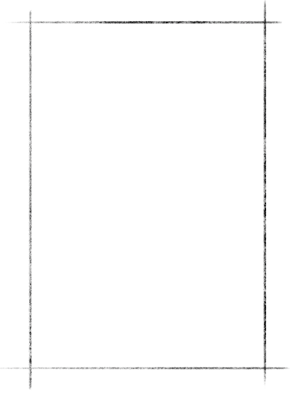
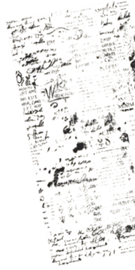
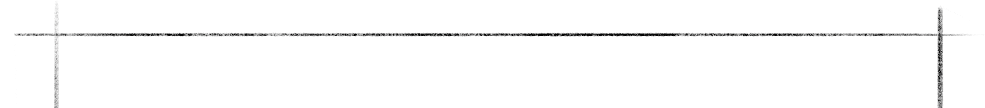
致十八期行者无疆——
徽州山水，自古备受文人吟咏。错落马头墙、幽深古巷、百年老宅，处处藏着岁月痕迹。精美的三雕、古朴天井，承载着徽人耕读传家的传统。潺潺溪水环绕村落，袅袅烟火温暖街巷。数日漫游，观山水，访古宅，感受独属于徽州的静谧。山水与人文相融，此行收获满心安然。
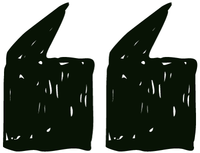
山绕清溪水绕城
白云碧嶂画难成
DATE：2026/08/01
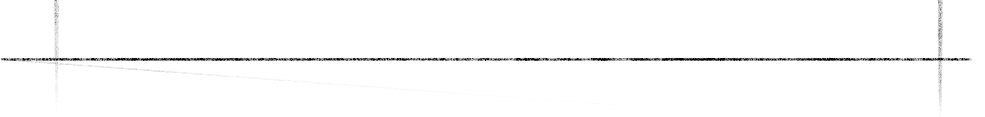
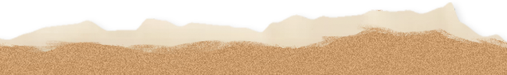
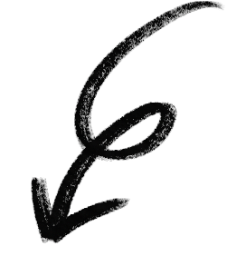
一张张影像承载故事
把此行记忆妥善安放
行者无疆
来源 | 行者无疆实践团
图片 | 行者无疆实践团
文字 | 仲禹潼
编辑 | 童思嘉
审核 | 闫 磊
责编 | 邹靓靓 周 亮